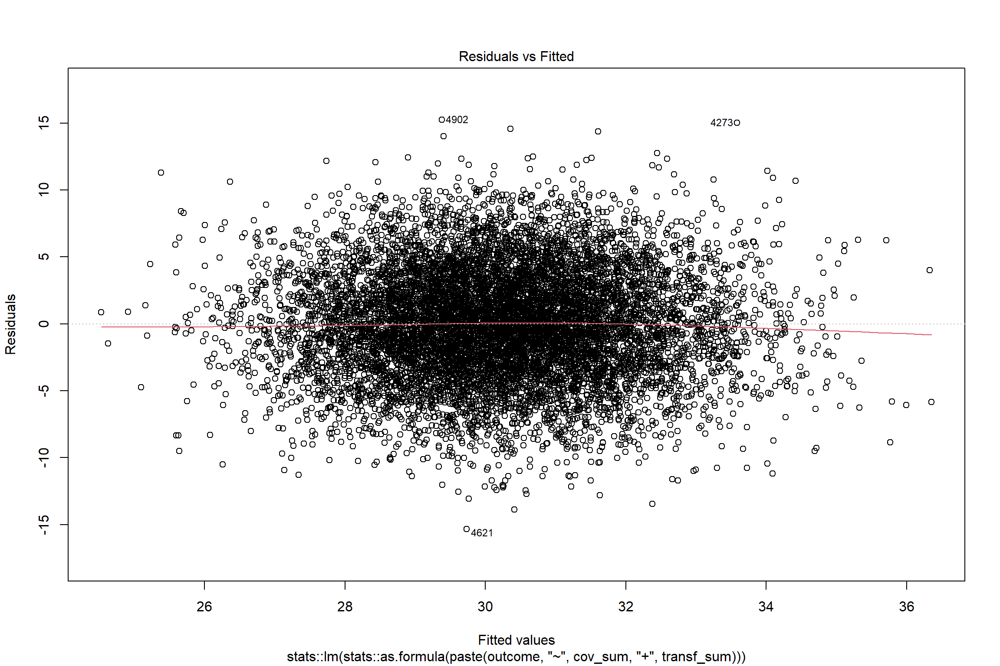
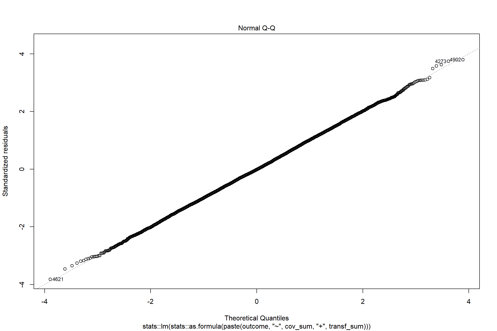
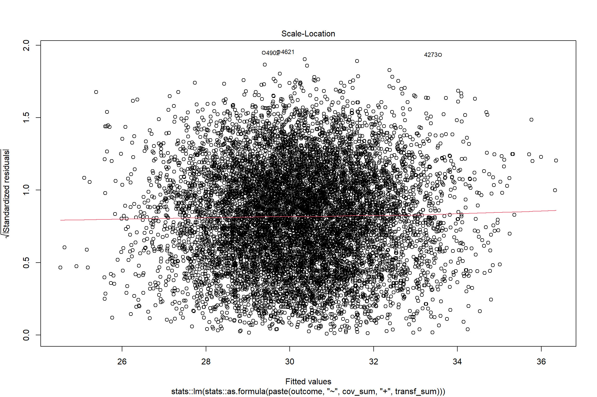
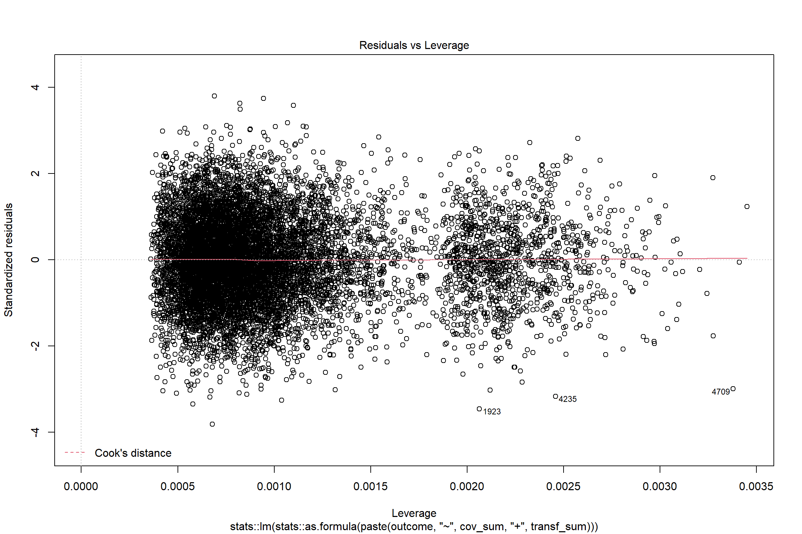
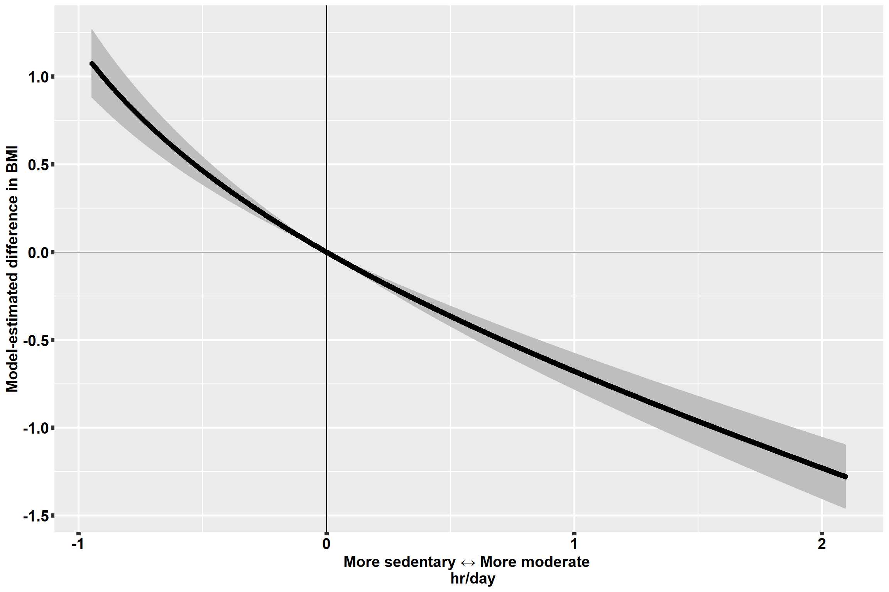
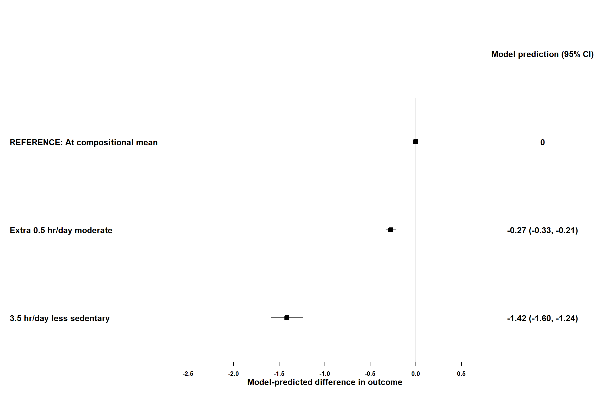
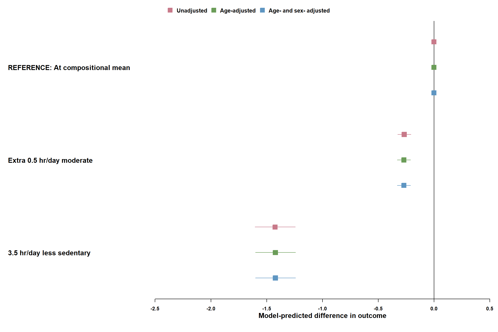
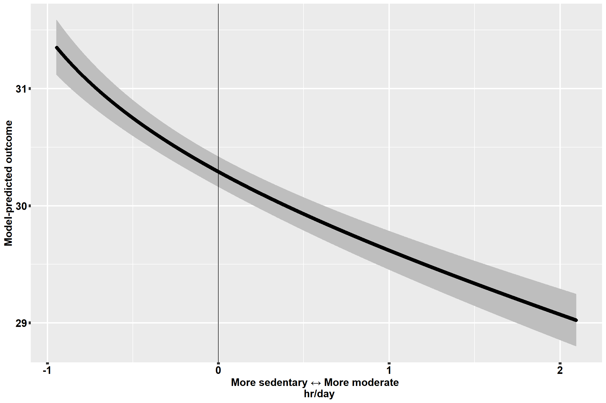
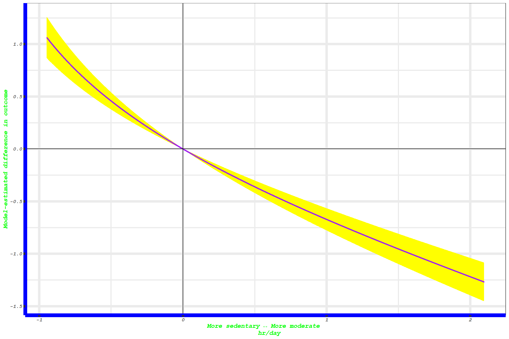
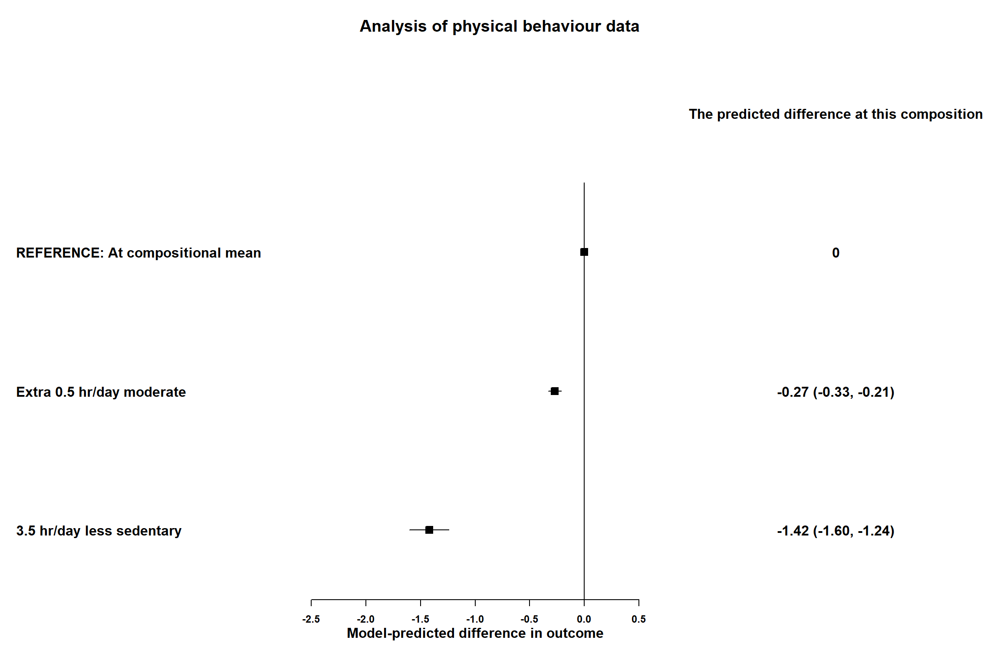

4_IntroToCompositionalDataAnalysis.Rmd
# First we need to install packages that aren't already present
## CRAN Packages
pkgs <- c(
"ggplot2",
# Plotting works better with ggplot2
"forestplot",
# Plotting works better with forestplot
"remotes" # To install epicoda from GitHub, the remotes package is required.
)
pkgs_inst <- pkgs[!{
pkgs %in% rownames(installed.packages())
}]
install.packages(pkgs_inst)
## GitHub Packages
if (!{
"epicoda" %in% rownames(installed.packages())
}) {
remotes::install_github(
repo = "activityMonitoring/epicoda",
build_opts = "--no-resave-data",
build_vignettes = TRUE,
build_manual = TRUE
) # TROUBLESHOOTING if this doesn't work, use build_vignettes = FALSE. You have the info from the vignette here!
}
rm(pkgs, pkgs_inst) # clean up after ourselvesLoad packages:
# Load packages
invisible(lapply(
c("ggplot2", "forestplot", "epicoda"),
library,
character.only = TRUE
))
#> Loading required package: grid
#> Loading required package: magrittr
#> Loading required package: checkmateThis tutorial is an optional additional tutorial on Compositional Data Analysis for movement behaviour data. Compositional Data Analysis is an approach to the analysis of compositional data which has become increasingly popular in movement behaviour epidemiology in recent years. This tutorial illustrates some steps of an epidemiological analysis with a compositional exposure. It uses a package, epicoda, we have developed for this purpose. More information about any function we use can be found by running ?function_name (as usual). Please note that the package is under active development, and has been tested in a limited range of scenarios, so you may well find bugs. If you do, or if anything isn’t clear, please do get in touch: rosemary.walmsley@gtc.ox.ac.uk.
This tutorial is closely based on one of the package vignettes… Which was itself based on an earlier version of this tutorial!
It is highly recommended to deal with missing data both in compositional variables and in covariate or outcome data prior to using the package: functions were designed assuming complete data and may not behave predictably where data is not complete.
simdata is a (simulated) compositional dataset in the epicoda package. It has 5 columns which make up a hypothetical movement behaviour composition: "vigorous" (activity), "moderate" (activity), "light" (activity), "sedentary" (behaviour), "sleep" It also contains sex, age group and outcome columns. As the data is simulated, all results are hypothetical.
head(simdata)
#> X sex agegroup follow_up_time event BMI disease vigorous
#> 1 1 Female Second oldest 24 TRUE 29.11778 0 0.001590611
#> 2 2 Male Second youngest 23 FALSE 26.79845 0 0.004381269
#> 3 3 Female Middle 21 FALSE 31.36632 0 0.047306815
#> 4 4 Male Middle 17 FALSE 32.86039 0 0.020263872
#> 5 5 Female Second oldest 14 FALSE 34.84146 0 0.002266761
#> 6 6 Female Middle 14 FALSE 23.18320 0 0.021275985
#> moderate light sedentary sleep
#> 1 0.3530120 2.468326 11.417090 9.759981
#> 2 1.1266360 5.496150 8.915976 8.456856
#> 3 1.4938324 2.900905 10.112896 9.445060
#> 4 1.8193326 4.162118 9.858822 8.139463
#> 5 0.9698058 3.718406 11.035129 8.274393
#> 6 2.0291247 4.353933 5.974741 11.620925Data is compositional when the relative (not absolute) values of the variables are relevant to the problem being studied (P., K., and M. 2018). Another way to describe this is that compositional data is data that can be expressed as proportions of a whole without losing information.
Here, the compositional variables sum to the same total (24 — the number of hours in the day), which is a common situation. As this means it is not possible to simply increase time in one behaviour — it is only possible to spend time in one behaviour rather than in another behaviour — it is the relative values that are relevant.
rowSums(simdata[1:10, c("vigorous", "moderate", "light", "sedentary", "sleep")])
#> 1 2 3 4 5 6 7 8 9 10
#> 24 24 24 24 24 24 24 24 24 24Other examples of compositional data don’t have a fixed sum. For example, consider the vote counts in an election for different parties in different constituencies: although the overall number of votes cast might differ between constituencies, it is the proportion of the vote going to each party, and not the total number of votes going to that party in a given constituency, that is relevant.
\[\begin{equation} \mathcal{C}(part_{1}, part_{2}, ..., part_{D}) = \Bigg(\frac{part_{1}}{\sum_{i =1}^{D}{part_i}}, \frac{part_{2}}{\sum_{i =1}^{D}{part_i}}, \ldots, \frac{part_{D}}{\sum_{i =1}^{D}{part_i}}\Bigg) \end{equation}\]
The compositional mean is a frequently-used summary statistic for compositional data (P., K., and M. 2018). It is found by taking the geometric mean of each component, then taking the closure so they sum to the overall total. Like the standard (multivariate) mean it is a measure of location, or central tendency. Unlike the standard mean, it interacts in an appropriate way with compositional data.
To calculate the compositional mean of columns "vigorous", "moderate", "light", "sedentary", "sleep" using epicoda, we run:
comp_mean(data = simdata, # this is the dataset
comp_labels = c("vigorous", "moderate", "light", "sedentary", "sleep") # this is the labels of the compositional columns,
# which we specified above
)
#> det_limit was imputed as the minimum value observed in the compositional
#> columns of data;
#> if this is an unrealistic det_limit, the results may be unreliable.
#> Zeroes were imputed with detection limit
#> 4.96e-05 (on the unitless scale) using zCompositions::lrEM
#> vigorous moderate light sedentary sleep
#> 1 0.0003677937 0.06264286 0.1478071 0.4227189 0.3664634Unfortunately, it’s thrown an error, with a message about zeroes. Compositional data analysis can’t automatically include zero values. For more information about this issue, see (Palarea-Albaladejo and Martín-Fernández 2015) and (C. et al. 2020). There are a couple of options:
They can be dropped. This is the right option if they’re so called “true zeroes” i.e. not related to a limit in the precision with which we can measure.
They can be imputed. This is the right option if they’re so-called “rounded zeroes” i.e. they’re related to a limit in the precision with which we can measure. For example, with movement behaviour data, it might be that if we recorded data for long enough, we would eventually see some vigorous activity, but our measurement period wasn’t long enough. It might also be that our measurement device can’t record values lower than a certain level.
For convenience, many functions in this package let you specify what to do with zeroes as part of the function, and will then perform this preprocessing step as part of the process. They have two arguments to do this: rounded_zeroes (default: TRUE) and det_limit (default: NULL).
rounded_zeroes = TRUE and det_limit to a numeric value on the same scale as the data imputes zeroes with that detection limit. Under the hood, it uses the lrEM() algorithm from the zCompositions package. Note that currently the same detection limit must apply to all compositional columns. [Note that if the input data scale and the output scale (units argument), are different, it should match the input data scale.]rounded_zeroes = FALSE will drop any rows with zeroes (i.e. use the “true zeroes” approach above)rounded_zeroes = TRUE and det_limit = NULL. If there are no zeroes in the data, either as they’ve already been processed or because there just are no zero values, this will run fine: it doesn’t need to do anything to the data. However, if there are zeroes it will throw an error message.These convenience functions should be used with care. You can choose to perform zero imputation or drop zero values prior to doing any analysis on your data. This has several advantages:
det_limit rescaling used in the package will fail. Again, these cases can be dealt with by pre-processing the zeroes using zCompositions
As well as comp_mean(), some other functions in the package also have rounded_zeroes and det_limit arguments: they also use calculations which need zeroes to be imputed or excluded. For all of them, it works the same as for comp_mean().
So we can now find the mean again, this time imputing the zeroes with a specified detection limit. In the simulated data, the shortest period of a behaviour we could detect was \(0.0012\ hr/day\) (due to the length of an epoch for the accelerometer used to measure the data on which the simulated data is based).
comp_mean(data = simdata, # this is the dataset
comp_labels = c("vigorous", "moderate", "light", "sedentary", "sleep"), # this is the labels of the compositional columns,
# which we specified above
rounded_zeroes = TRUE, # this option specifies that we'll treat the zeroes
# as rounded zeroes i.e. we'll impute them
det_limit = 0.0012, # this is the smallest value observable in the data
)
#> Zeroes were imputed with detection limit
#> 5e-05 (on the unitless scale) using zCompositions::lrEM
#> vigorous moderate light sedentary sleep
#> 1 0.0003681628 0.06264284 0.1478071 0.4227187 0.3664632Even though we started out with sums which added to 24, the mean seems to add to 1. This is because we didn’t specify the units — and so the package didn’t know what units to return it to us in. But it could still return it as a sum to 1, without loss of information, as per the definition of compositional data.
To change, this we can specify the output units:
comp_mean(data = simdata,
comp_labels = c("vigorous", "moderate", "light", "sedentary", "sleep"),
rounded_zeroes = TRUE,
det_limit = 0.0012,
units = "hr/day" # this is the units. There are pre-specified options "hr/day",
# "hr/wk", "min/day", "min/wk" and "unitless".
# If you set units = "specified", you can also specify your own units using
# specified = c("my_units_name", sum of a composition in these units)
)
#> Zeroes were imputed with detection limit
#> 5e-05 (on the unitless scale) using zCompositions::lrEM
#> vigorous moderate light sedentary sleep
#> 1 0.008835908 1.503428 3.547369 10.14525 8.795118While the compositional mean is a fairly clear compositional equivalent to the mean for non-compositional data, other standard descriptive statistics (such as the variance), do not have straightforward compositional equivalents for all purposes for which they are used (there may be several alternatives, depending on the purpose of the analysis) (P., K., and M. 2018). These are beyond the current scope of this package.
Ternary plots provide a way to plot compositional data with three parts. The R package ggtern is an extension of ggplot2 to carry out this plotting. Unfortunately, the current version causes some unfortunate masking of ggplot2 methods, so isn’t shown in this vignette. But if you want to plot ternary plots, I (Rosemary) can share code and tips!
The package has a wrapper for linear regression, logistic regression and Cox regression modelling using compositional variables, with adjustment for covariates. Compositional Data Analysis regression modelling works by transforming the variables making up the composition, and using the transformed variables (known as “log-ratio coordinates”) in the model (see “Mechanics of Compositional Data Analysis” below). The package automates these steps. For example, to set up a linear regression model for the association between behaviour variables and BMI, adjusted for age group and sex:
lm_BMI <- comp_model(
type = "linear",
outcome = "BMI",
covariates = c("agegroup", "sex"),
data = simdata,
comp_labels = c("vigorous", "moderate", "light", "sedentary", "sleep"),
det_limit = 0.0012
)
#> Zeroes were imputed with detection limit
#> 5e-05 (on the unitless scale) using zCompositions::lrEMLogistic models can be produced in exactly the same way by setting type = "logistic" and using an appropriate binary outcome variable. Cox models can be produced similarly by setting type = "cox" and either setting outcome as a Surv object from the package survival or setting the follow_up_time and event arguments. For examples, see “Regression modelling: further examples.”
The model object is a standard lm object, and we can inspect it in the usual way:
plot(lm_BMI)
The model diagnostics can be interpreted as usual, and in this case all looks fine.
summary(lm_BMI)
#>
#> Call:
#> stats::lm(formula = stats::as.formula(paste(outcome, "~", cov_sum,
#> "+", transf_sum)), data = data_ready)
#>
#> Residuals:
#> Min 1Q Median 3Q Max
#> -15.3465 -2.7015 -0.0577 2.7200 15.2461
#>
#> Coefficients:
#> Estimate Std. Error t value Pr(>|t|)
#> (Intercept) 25.69193 0.22071 116.406 < 2e-16 ***
#> agegroupSecond youngest 0.30385 0.18648 1.629 0.103265
#> agegroupMiddle 0.69788 0.18044 3.868 0.000111 ***
#> agegroupSecond oldest 0.90321 0.18676 4.836 1.34e-06 ***
#> agegroupOldest 1.09856 0.23840 4.608 4.12e-06 ***
#> sexMale -1.03684 0.08044 -12.890 < 2e-16 ***
#> ilr_1_vigorous_vs_parts_2_to_5 -0.39356 0.02707 -14.540 < 2e-16 ***
#> ilr_2_moderate_vs_parts_3_to_5 -1.12531 0.10911 -10.314 < 2e-16 ***
#> ilr_3_light_vs_parts_4_to_5 -0.65503 0.11086 -5.908 3.57e-09 ***
#> ilr_4_sedentary_vs_part_5 2.12672 0.20999 10.128 < 2e-16 ***
#> ---
#> Signif. codes: 0 '***' 0.001 '**' 0.01 '*' 0.05 '.' 0.1 ' ' 1
#>
#> Residual standard error: 4.02 on 9990 degrees of freedom
#> Multiple R-squared: 0.1324, Adjusted R-squared: 0.1317
#> F-statistic: 169.4 on 9 and 9990 DF, p-value: < 2.2e-16The summary is hard to interpret because the transformed variables or ‘coordinates’ used in the model do not relate in a straightforward way to the original composition.
One way to present the results is to present coefficients as usual for covariates, and then produce as many models as there are compositional variables. From each of these models, the coefficient for the first ‘ilr pivot coordinate’ is taken (see “Mechanics of Compositional Data Analysis” below). These ilr pivot coordinate coefficients can be interpreted in terms of transfer between the particular compositional part and all other parts proportionally. tab_coefs() is a function which wraps generating one model per compositional variable and outputting a table of model coefficients.
tab_coefs(scale_type = "lp", # This argument can be "lp" or "exp" and determines whether coefficients are presented on the scale of the linear predictors ("lp") or are exponentiated ("exp").
# Exponentiation gives the Odds Ratio for logistic regression models and the Hazard Ratio for Cox regression models.
level = 0.95,
type = "linear",
outcome = "BMI",
data = simdata,
covariates = c("agegroup", "sex"),
comp_labels = c("vigorous", "moderate", "light", "sedentary", "sleep"),
det_limit = 0.0012)
#> Zeroes were imputed with detection limit
#> 5e-05 (on the unitless scale) using zCompositions::lrEM
#> Zeroes were imputed with detection limit
#> 5e-05 (on the unitless scale) using zCompositions::lrEM
#> Zeroes were imputed with detection limit
#> 5e-05 (on the unitless scale) using zCompositions::lrEM
#> Zeroes were imputed with detection limit
#> 5e-05 (on the unitless scale) using zCompositions::lrEM
#> Zeroes were imputed with detection limit
#> 5e-05 (on the unitless scale) using zCompositions::lrEM
#> Zeroes were imputed with detection limit
#> 5e-05 (on the unitless scale) using zCompositions::lrEM
#> fit 2.5 %
#> (Intercept) 25.6919350 25.25929897
#> agegroupSecond youngest 0.3038512 -0.06169382
#> agegroupMiddle 0.6978814 0.34417320
#> agegroupSecond oldest 0.9032074 0.53712570
#> agegroupOldest 1.0985564 0.63123562
#> sexMale -1.0368379 -1.19451017
#> First pivot coordinate: vigorous vs All other parts -0.3935624 -0.44662130
#> First pivot coordinate: moderate vs All other parts -0.9911882 -1.20657851
#> First pivot coordinate: light vs All other parts -0.1363731 -0.36175834
#> First pivot coordinate: sedentary vs All other parts 2.4418799 2.13238655
#> First pivot coordinate: sleep vs All other parts -0.9207561 -1.28916692
#> 97.5 %
#> (Intercept) 26.12457094
#> agegroupSecond youngest 0.66939623
#> agegroupMiddle 1.05158959
#> agegroupSecond oldest 1.26928902
#> agegroupOldest 1.56587724
#> sexMale -0.87916555
#> First pivot coordinate: vigorous vs All other parts -0.34050347
#> First pivot coordinate: moderate vs All other parts -0.77579794
#> First pivot coordinate: light vs All other parts 0.08901205
#> First pivot coordinate: sedentary vs All other parts 2.75137317
#> First pivot coordinate: sleep vs All other parts -0.55234528comp_model() must be given to this function too, as it regenerates the regression models.tab_covariate_coefs() is called within this function, and can be used to extract the coefficients of the covariates only from a model.Substitution or reallocation plots show the model-estimated difference in the outcome (relative to at the compositional mean) as the balance between two parts of the composition varies. In the case of time use/movement behaviours, they are sometimes described as isotemporal substitution plots and show the model-estimated difference in the outcome at higher time in one behaviour at the expense of time in another behaviour (the model-estimated difference in outcome for a hypothetical reallocation of time from one behaviour to another). For example:
plot_transfers(
from_part = "sedentary",
to_part = "moderate",
model = lm_BMI ,
comp_labels = c("vigorous", "moderate", "light", "sedentary", "sleep"),
y_label = "Model-estimated difference in BMI",
units = "hr/day"
)
#> [1] "Compositional variables not varied in the visualisation were fixed at:"
#> [1] "vigorous : 0.0088 hr/day"
#> [1] "light : 3.5 hr/day"
#> [1] "sleep : 8.8 hr/day"
#> fixed_values will be updated to have compositional parts fixed at the compositional mean. For technical and pragmatic reasons, use of a different reference for the compositional parts is not currently possible.
#> Please note that plotting may take some time.
Another set of estimates that might be of interest are estimates of the difference in outcome associated with particular compositions, again relative to the mean. These can be examined by plotting these in a “forest plot” style plot. This allows assessment of the model-estimated associations with more complex substitutions of time. Note that you may wish to more flexibly plot this yourself (see section: “Getting the numbers out: estimates for particular compositions”).
While there are hugely varied compositions which might be possible, one kind of composition is often of interest. This is compositions where one particular part is perturbed at the expense of all other parts proportionally. As this is a common use case, there is a function implemented to do this:
df <- as.data.frame(comp_mean(
data = simdata,
comp_labels = c("vigorous", "moderate", "light", "sedentary", "sleep"),
units = "hr/day" # Note whatever the units are here is the units
# you should specify the changes in in the next two lines.
))
#> det_limit was imputed as the minimum value observed in the compositional
#> columns of data;
#> if this is an unrealistic det_limit, the results may be unreliable.
#> Zeroes were imputed with detection limit
#> 4.96e-05 (on the unitless scale) using zCompositions::lrEM
new_comp <-
change_composition(
composition = df,
main_part = "moderate",
main_change = +0.5,
comp_labels = c("vigorous", "moderate", "light", "sedentary", "sleep")
)
new_comp2 <-
change_composition(
composition = df,
main_part = "sedentary",
main_change = -3.5,
comp_labels = c("vigorous", "moderate", "light", "sedentary", "sleep")
)
list_for_plot <-
list("Extra 0.5 hr/day moderate" = new_comp,
"3.5 hr/day less sedentary" = new_comp2)
print(list_for_plot)
#> $`Extra 0.5 hr/day moderate`
#> vigorous moderate light sedentary sleep
#> 1 0.008630863 2.003429 3.468528 9.919768 8.599644
#>
#> $`3.5 hr/day less sedentary`
#> vigorous moderate light sedentary sleep
#> 1 0.01105695 1.883226 4.443511 6.645252 11.01695We now need to plot these, which can be done as follows.
forest_plot_comp(
composition_list = list_for_plot,
model = lm_BMI,
comp_labels = c("vigorous", "moderate", "light", "sedentary", "sleep")
)
#> GRID.VP.11::forestplot_marginsPlease note that on the plot with terms = TRUE the reference is always the compositional mean in the dataset used to create the model. This will agree with the compositional mean calculated above and which we calculated perturbations relative to if there is no missing data in the dataset used to create the model. To check this, there’s a utility function in the package to get the compositional mean directly from the model (although it’s a bit ugly):
# Set up of the function means it uses this internal from the modelling. Hopefully will be streamlined in future... :
tl_for_check <-
transf_labels(
comp_labels = c("vigorous", "moderate", "light", "sedentary", "sleep"),
transformation_type = "ilr"
)
# The comp mean calculated from the model:
get_cm_from_model(
lm_BMI,
comp_labels = c("vigorous", "moderate", "light", "sedentary", "sleep"),
transf_labels = tl_for_check
)$cm
#> vigorous moderate light sedentary sleep
#> 1 0.0003681628 0.06264284 0.1478071 0.4227187 0.3664632
# The comp mean calculated above transformed to unitless scale:
df / 24
#> vigorous moderate light sedentary sleep
#> 1 0.0003677937 0.06264286 0.1478071 0.4227189 0.3664634The forest_plot_comp() function can also be used to compare models. To do this, leave model at its default NULL value, and set models_list as a named list of models. For example, to compare lm_BMI with a model adjusted for age_group only and an unadjusted model (very boring in the simulated data because the correlation structure for the simulation wasn’t sufficiently rich!):
lm_BMI_unadjusted <- comp_model(
type = "linear",
outcome = "BMI",
data = simdata,
comp_labels = c("vigorous", "moderate", "light", "sedentary", "sleep"),
det_limit = 0.0012
)
#> Zeroes were imputed with detection limit
#> 5e-05 (on the unitless scale) using zCompositions::lrEM
lm_BMI_age_group_only <- lm_BMI <- comp_model(
type = "linear",
outcome = "BMI",
covariates = c("agegroup"),
data = simdata,
comp_labels = c("vigorous", "moderate", "light", "sedentary", "sleep"),
det_limit = 0.0012
)
#> Zeroes were imputed with detection limit
#> 5e-05 (on the unitless scale) using zCompositions::lrEM
forest_plot_comp(
composition_list = list_for_plot,
models_list = list(
"Unadjusted" = lm_BMI_unadjusted,
"Age-adjusted" = lm_BMI_age_group_only,
"Age- and sex- adjusted" = lm_BMI
),
comp_labels = c("vigorous", "moderate", "light", "sedentary", "sleep")
)
#> GRID.VP.14::forestplot_marginsThis section contains lots of additional information, on:
The functions above wrap all the “log-ratio mechanics” of using a Compositional Data Analysis approach.
There are several different kinds of transformations which can be used in order to work with compositional data (alr, ilr, clr). These transform the variables into coordinates which are capable of representing all the variation in the data. Different transformations have different pros/cons, and alr and clr can only be used for certain applications. All the functions default to ilr (isometric log ratio) transformation using so-called “pivot coordinates,” which is fairly standard in the time use/movement behaviour literature (and is appropriate for the applications which the other transformations are used for). If you want to learn more, see (P., K., and M. 2018)(V., J., and R. 2011).
The purpose of this package is not to provide this functionality, which is implemented in other R packages, such as compositions and robCompositions. (The main aim of this package is shown above, in the functions to perform standard epidemiological analyses). This functionality is reimplemented here simply to ensure that future changes to the defaults in those packages do not affect this package.
data_ilr_impute_zeroes <- transform_comp(
data = simdata,
comp_labels = c("vigorous", "moderate", "light", "sedentary", "sleep"),
transformation_type = "ilr",
det_limit = 0.0012
)
#> Zeroes were imputed with detection limit
#> 5e-05 (on the unitless scale) using zCompositions::lrEM
print(head(data_ilr_impute_zeroes))
#> X sex agegroup follow_up_time event BMI disease vigorous
#> 1 1 Female Second oldest 24 TRUE 29.11778 0 6.627545e-05
#> 2 2 Male Second youngest 23 FALSE 26.79845 0 1.825529e-04
#> 3 3 Female Middle 21 FALSE 31.36632 0 1.971117e-03
#> 4 4 Male Middle 17 FALSE 32.86039 0 8.443280e-04
#> 5 5 Female Second oldest 14 FALSE 34.84146 0 9.444837e-05
#> 6 6 Female Middle 14 FALSE 23.18320 0 8.864994e-04
#> moderate light sedentary sleep ilr_1_vigorous_vs_parts_2_to_5
#> 1 0.01470883 0.1028469 0.4757121 0.4066659 -6.786519
#> 2 0.04694317 0.2290063 0.3714990 0.3523690 -6.231424
#> 3 0.06224302 0.1208710 0.4213707 0.3935441 -4.076369
#> 4 0.07580553 0.1734216 0.4107843 0.3391443 -4.920523
#> 5 0.04040858 0.1549336 0.4597970 0.3447664 -6.742751
#> 6 0.08454686 0.1814139 0.2489476 0.4842052 -4.879042
#> ilr_2_moderate_vs_parts_3_to_5 ilr_3_light_vs_parts_4_to_5
#> 1 -2.523223 -1.1865007
#> 2 -1.636546 -0.3734355
#> 3 -1.276028 -0.9917403
#> 4 -1.159234 -0.6258620
#> 5 -1.708819 -0.7706337
#> 6 -1.035944 -0.5299835
#> ilr_4_sedentary_vs_part_5
#> 1 0.11088910
#> 2 0.03738280
#> 3 0.04830928
#> 4 0.13551171
#> 5 0.20358888
#> 6 -0.47041451There are also a few other things we can do with this function, like specifying a given “first part” (which is useful when it comes to reporting, and is used therefore in tab_coefs()). To learn more, run ?transform_comp.
An alternative way to get round the challenges of interpreting the model coefficients for these models is to look at model-predicted outcomes for different input variable values (rather than model-estimated differences). The plot_transfers() function can do this (for linear, logistic and Cox regression models) by setting terms = FALSE:
plot_transfers(
from_part = "sedentary",
to_part = "moderate",
model = lm_BMI ,
comp_labels = c("vigorous", "moderate", "light", "sedentary", "sleep"),
y_label = "Model-predicted outcome",
units = "hr/day",
terms = FALSE
)
#> [1] "Compositional variables not varied in the visualisation were fixed at:"
#> [1] "vigorous : 0.0088 hr/day"
#> [1] "light : 3.5 hr/day"
#> [1] "sleep : 8.8 hr/day"
#> fixed_values will be updated to have compositional parts fixed at the compositional mean. For technical and pragmatic reasons, use of a different reference for the compositional parts is not currently possible.
#> Note that the confidence intervals on these predictions include uncertainty driven by other, non-compositional variables. To look at compositional variables only, use terms = TRUE
#> [1] "Covariate values were fixed at: "
#> [1] "agegroup : Middle"
#> Please note that plotting may take some time.
#> Warning: Removed 1 rows containing missing values (geom_hline).
fixed_values argument can be used to set the values at which covariates (but not compositional variables) are fixed (which if not set default to mean or modal values for continuous and categorical variables respectively)forest_plot_comp(), can also output predictions by setting terms = FALSE.terms = FALSE is used with a Cox model, note results are still presented as HRs/ risk scores.All the plotting functions can have settings changed to make more visually attractive plots (e.g. changing text size, line size, text colour). plot_transfers() is based on ggplot2.
theme argument. Note that you will need the ggplot2 package loaded in order to do this.plot_transfers(), to specify characteristics of the plotted prediction line, set the point_specification argument as a geom_point() object.plot_transfers(), to specify colours of the error bars, set the error_bar_colour argument as the name of a colour.plot_transfers(), if the line looks ‘gappy’ (likely at the ends), increase granularity (and if it takes too long to plot, decrease granularity).For an extreme example of implementing some of this:
# it's easier to specify themes if ggplot2 is loaded.
plot_transfers(
from_part = "sedentary",
to_part = "moderate",
model = lm_BMI ,
comp_labels = c("vigorous", "moderate", "light", "sedentary", "sleep"),
y_label = "Model-estimated difference in outcome",
units = "hr/day",
point_specification = geom_point(size = 0.5, colour = "purple"),
error_bar_colour = "yellow",
theme = theme_bw() + theme(
line = element_line(colour = "red", size = 2),
text = element_text(
family = "mono",
face = "bold.italic",
colour = "green"
),
axis.line = element_line(colour = "blue", size = 3)
)
)
#> [1] "Compositional variables not varied in the visualisation were fixed at:"
#> [1] "vigorous : 0.0088 hr/day"
#> [1] "light : 3.5 hr/day"
#> [1] "sleep : 8.8 hr/day"
#> fixed_values will be updated to have compositional parts fixed at the compositional mean. For technical and pragmatic reasons, use of a different reference for the compositional parts is not currently possible.
#> Please note that plotting may take some time.
Slightly differently, forest_plot_comp() is based on the forestplot package, so takes arguments specifying the plot in the same way as that function. There are several arguments which set particular aspects of the forest plot. In addition, any argument that the basic forestplot function can take, which isn’t already set, can be set as an argument to forest_plot_comp().
# it's easier to specify options such as fpColors if the forestplot package is loaded.
forest_plot_comp(composition_list = list_for_plot,
model = lm_BMI,
comp_labels = c("vigorous", "moderate", "light", "sedentary", "sleep"),
pred_name = "The predicted difference at this composition", # This sets the name with which to label the column. ,
title = "Analysis of physical behaviour data", # This sets the overall plot title.
col = forestplot::fpColors(zero = "black") # This sets the colour of the line at 0 (or 1, if it's the plot of a logistic or Cox model)
)
#> GRID.VP.43::forestplot_marginsFor additional information on how to customise the functions, see the manual by running e.g. ?plot_transfers.
As well as linear models, we can produce logistic and Cox models:
log_outcome <- comp_model(type = "logistic",
outcome = "disease",
covariates = c("agegroup", "sex"),
data = simdata,
comp_labels = c("vigorous", "moderate", "light", "sedentary", "sleep"),
det_limit = 0.0012)
#> Zeroes were imputed with detection limit
#> 5e-05 (on the unitless scale) using zCompositions::lrEM
summary(log_outcome)
#>
#> Call:
#> stats::glm(formula = stats::as.formula(paste(outcome, "~", cov_sum,
#> "+", transf_sum)), family = "binomial", data = data_ready)
#>
#> Deviance Residuals:
#> Min 1Q Median 3Q Max
#> -0.8572 -0.3674 -0.2796 -0.2119 3.0747
#>
#> Coefficients:
#> Estimate Std. Error z value Pr(>|z|)
#> (Intercept) -4.47963 0.32787 -13.663 < 2e-16 ***
#> agegroupSecond youngest 0.44652 0.30187 1.479 0.139087
#> agegroupMiddle 0.73836 0.29189 2.530 0.011418 *
#> agegroupSecond oldest 1.14369 0.29291 3.905 9.44e-05 ***
#> agegroupOldest 1.71099 0.31244 5.476 4.34e-08 ***
#> sexMale -1.00053 0.10048 -9.957 < 2e-16 ***
#> ilr_1_vigorous_vs_parts_2_to_5 -0.06937 0.03082 -2.250 0.024420 *
#> ilr_2_moderate_vs_parts_3_to_5 -0.42169 0.12694 -3.322 0.000894 ***
#> ilr_3_light_vs_parts_4_to_5 -0.19878 0.12571 -1.581 0.113805
#> ilr_4_sedentary_vs_part_5 -0.28148 0.24033 -1.171 0.241511
#> ---
#> Signif. codes: 0 '***' 0.001 '**' 0.01 '*' 0.05 '.' 0.1 ' ' 1
#>
#> (Dispersion parameter for binomial family taken to be 1)
#>
#> Null deviance: 4075.6 on 9999 degrees of freedom
#> Residual deviance: 3836.5 on 9990 degrees of freedom
#> AIC: 3856.5
#>
#> Number of Fisher Scoring iterations: 6
cox_outcome <- comp_model(type = "cox",
event = "event",
follow_up_time = "follow_up_time",
covariates = c("agegroup", "sex"),
data = simdata,
comp_labels = c("vigorous", "moderate", "light", "sedentary", "sleep"),
det_limit = 0.0012)
#> Zeroes were imputed with detection limit
#> 5e-05 (on the unitless scale) using zCompositions::lrEM
summary(cox_outcome)
#> Call:
#> survival::coxph(formula = stats::as.formula(paste("survival_object ~",
#> cov_sum, "+", transf_sum)), data = data_ready, model = TRUE)
#>
#> n= 10000, number of events= 1004
#>
#> coef exp(coef) se(coef) z Pr(>|z|)
#> agegroupSecond youngest 0.64372 1.90355 0.15511 4.150 3.32e-05 ***
#> agegroupMiddle 1.02972 2.80029 0.15426 6.675 2.47e-11 ***
#> agegroupSecond oldest 1.65514 5.23383 0.16099 10.281 < 2e-16 ***
#> agegroupOldest 2.30523 10.02647 0.19627 11.745 < 2e-16 ***
#> sexMale 0.80760 2.24252 0.06713 12.030 < 2e-16 ***
#> ilr_1_vigorous_vs_parts_2_to_5 -0.03546 0.96517 0.02121 -1.671 0.0946 .
#> ilr_2_moderate_vs_parts_3_to_5 -0.40007 0.67027 0.08569 -4.669 3.03e-06 ***
#> ilr_3_light_vs_parts_4_to_5 0.15163 1.16373 0.08813 1.720 0.0853 .
#> ilr_4_sedentary_vs_part_5 0.11132 1.11775 0.16622 0.670 0.5030
#> ---
#> Signif. codes: 0 '***' 0.001 '**' 0.01 '*' 0.05 '.' 0.1 ' ' 1
#>
#> exp(coef) exp(-coef) lower .95 upper .95
#> agegroupSecond youngest 1.9035 0.52533 1.4045 2.5799
#> agegroupMiddle 2.8003 0.35711 2.0696 3.7889
#> agegroupSecond oldest 5.2338 0.19106 3.8175 7.1756
#> agegroupOldest 10.0265 0.09974 6.8247 14.7303
#> sexMale 2.2425 0.44593 1.9660 2.5579
#> ilr_1_vigorous_vs_parts_2_to_5 0.9652 1.03609 0.9259 1.0061
#> ilr_2_moderate_vs_parts_3_to_5 0.6703 1.49193 0.5666 0.7928
#> ilr_3_light_vs_parts_4_to_5 1.1637 0.85930 0.9791 1.3832
#> ilr_4_sedentary_vs_part_5 1.1178 0.89465 0.8070 1.5482
#>
#> Concordance= 0.672 (se = 0.009 )
#> Likelihood ratio test= 368.2 on 9 df, p=<2e-16
#> Wald test = 366.6 on 9 df, p=<2e-16
#> Score (logrank) test = 389.9 on 9 df, p=<2e-16To get the numbers out for estimates at particular compositions, we can use the predict_fit_and_ci() function (which is wrapped in the plotting functions).This takes a data frame argument for new_data.
predict_fit_and_ci(
model = lm_BMI,
new_data = new_comp,
comp_labels = c("vigorous", "moderate", "light", "sedentary", "sleep")
)[, c("fit", "lower_CI", "upper_CI")]
#> fit lower_CI upper_CI
#> 1 -0.2696295 -0.3297899 -0.2094691